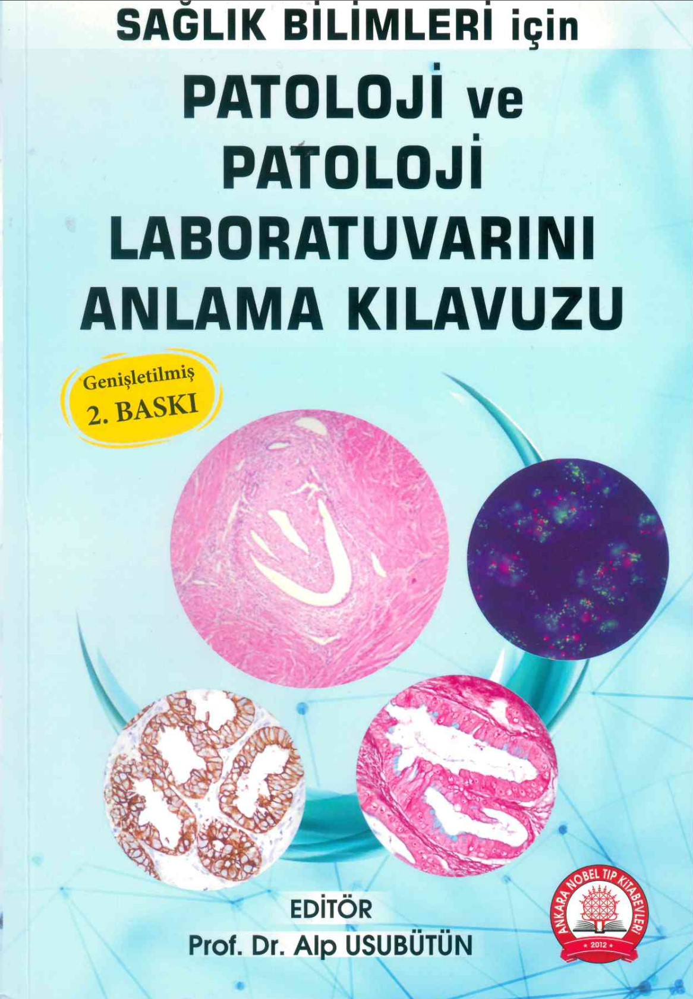

graph TD
POLIKLINIK[Poliklinik] --> HASTANETRANSFER[Hastane Transfer]
HASTABASI[Hasta Başı] --> HASTANETRANSFER[Hastane Transfer]
FROZEN[Frozen] --> AMELİYATHANE[Ameliyathane]
AMELİYATHANE[Ameliyathane] --> HASTANETRANSFER[Hastane Transfer]
HASTANETRANSFER[Hastane Transfer] --> PATOLOJIKABUL{Patoloji Kabul}
PATOLOJIKABUL{Patoloji Kabul} --> MAKROSKOPİ[Makroskopi]
MAKROSKOPİ[Makroskopi] --> MAKROSKOPIARSIV[Makroskopi Arşiv]
MAKROSKOPIARSIV[Makroskopi Arşiv] --> TIBBIATIK[Tıbbi Atık]
MAKROSKOPİ[Makroskopi] --> DOKUTAKIP[Doku Takip]
DOKUTAKIP[Doku Takip] --> GOMME[Gömme]
GOMME[Gömme] --> KESIT[Kesit]
TESLIMATDP[Teslimat ya da Dijital Tarama] -..-> ARSIV[Lam/Blok Arşivi, Dijital Arşiv]
KESIT[Kesit] --> HE[Rutin Boyama HE]
HE[Rutin Boyama HE] --> TESLIMATDP[Teslimat ya da Dijital Tarama]
TESLIMATDP[Teslimat ya da Dijital Tarama] --> PATOLOG{Patolog}
PATOLOG{Patolog} --Mikroskopi--> RAPOR(Rapor)
RAPOR(Rapor) -.Ek Rapor.-> RAPORARSIV[Rapor Arşivi]
RAPORARSIV[Rapor Arşivi] -..- RESEARCH[Araştırma, Konsültasyon]
ARSIV[Lam/Blok Arşivi, Dijital Arşiv] -..- RESEARCH[Araştırma, Konsültasyon]
PATOLOG{Patolog} -.Yeni Parça.-> MAKROSKOPİ[Makroskopi]
PATOLOG{Patolog} -.Yeni Kesit.-> KESIT[Kesit]
KESIT[Kesit] -.Histokimya.-> TESLIMATDP[Teslimat ya da Dijital Tarama]
KESIT[Kesit] -.İmmünohistokimya.-> TESLIMATDP[Teslimat ya da Dijital Tarama]
KESIT[Kesit] -.FISH/CISH.-> TESLIMATDP[Teslimat ya da Dijital Tarama]
KESIT[Kesit] -.Genetik.-> PATOLOG{Patolog}
PATOLOG{Patolog} -.Konsültasyon.- DIGERPATOLOG[Diğer Patolog]
PATOLOG{Patolog} -.Konsültasyon.- DIGERHASTANEPATOLOG[Diğer Hastanedeki Patolog]
RAPOR(Rapor) --- KLINISYEN[Klinisyen]
RAPOR(Rapor) --- KLINIKOPATOLOJIK[Klinikopatolojik Toplantı]
PATOLOJIKABUL{Patoloji Kabul} --> SİTOLOJİ[Sitoloji]
SİTOLOJİ[Sitoloji] --> DOKUTAKIP[Doku Takip]
SİTOLOJİ[Sitoloji] --> TESLIMATDP[Teslimat ya da Dijital Tarama]
Mühendisler ve Hekimler Ortak Bir Dili Nasıl Kurar?
Patologdan Mühendislere
Serdar Balcı
Memorial Patoloji
2025-10-15
Patoloji İş Akışı ve Yazılım İhtiyacı


Amaç, Motivasyon, Etik
- Merak
- Dijital patoloji görüntüleri üzerine fikir sahibi olmak
- Araştırma
- Görüntü analizi, derin öğrenme, graph theory üzerinde çalışırken model olarak
- Ürün
- Karar destek sistemi geliştirmek
- Sağkalım / tedavi / genetik bilgiyi tahmin etmek
- Makale / tez yazalım?
- Patoloğun hayatını kolaylaştıracak mı?
- Etik kurul onayı
- Veri transferi ve verinin işleneceği ortam
- Kurum içi / Yurt içi / Bulut / Federe öğrenme
- Araştırmacılar kim
- Yazar olarak görünen eksper patolog mu değerlendirdi? Teşekkür bölümünde adı geçen asistanı mı? “Ground truth” bilgisi nereden geliyor?
- Ghostlama / Etkin zaman kullanımı
Çalışmaya Uygun Temel Histopatoloji
Patoloji laboratuvar ziyaretleri
Patoloji-mühendis ortak workshop’lar
Rapor alanları ve terminolojisi
Tanı kriterleri, derecelendirme
Sayısal skorlar ve ölçüm yöntemleri (eyeballing, hotspot)
Kategoriler ve cut-off belirleme
Doğal, nekroz, tümör, bağ doku, inflamasyon
ESDIP Academy 2024: https://www.esdipath.org/academy/
Metin Verisi: Yapılandırılmış, Serbest Metin


Klinik bilgi
- Metin verisi görüntünün önüne geçebilir.
- Triyaj algoritmasında klinik bilgide tümör şüphesi
- Primeri bilinmeyen tümör algoritmasında yaş, cinsiyet
- Tedavi
- Sağkalım
Görüntü Verisi
- Hazır veri setleri
- Hazır taranmış görüntü
- Arşivden eski vakalar
- Solma, çizilme, tozlanma
Whole Slide Imaging (WSI) Formatları
- .svs (Aperio)
- .ndpi (Hamamatsu)
- .mrxs (3DHISTECH)
- .scn (Leica)
- .vms/.vmu (Olympus)
- .tiff (pyramidal TIFF)
- DICOM WSI
- .zarr (cloud-optimized)
- OpenSlide: Çoklu format okuma
- Bio-Formats: Format dönüştürme
- ASAP: Viewer ve format desteği
Tarama Çözünürlüğü ve Boyutlar
Çözünürlük Seviyeleri
- 40x (0.25 μm/pixel): Hücre detayı
- 20x (0.50 μm/pixel): Rutin tanı
- 10x (1.00 μm/pixel): Genel yapı
- 5x, 2.5x, 1.25x: Thumbnail
Dosya Boyutları
- Tek slide: 1-5 GB
- 100 slide: ~300 GB
- 1000 slide: ~3 TB
Piramit Yapısı
Level 0: 100,000 x 80,000 px (40x)
Level 1: 50,000 x 40,000 px (20x)
Level 2: 25,000 x 20,000 px (10x)
Level 3: 12,500 x 10,000 px (5x)
...Avantaj: Hızlı zoom/pan
Tile/Patch Extraction
- Tile boyutu seçimi: 224x224, 256x256, 512x512, 1024x1024
- Overlap stratejisi: 0%, 25%, 50% overlap
- Magnification: Hangi seviyeden extract edilecek?
- Tissue detection: Background’u atlama
- Koordinat bilgisi: x, y koordinatlarını kaydetme
Patch Sampling Stratejileri
- Rastgele koordinatlar
- Hızlı
- Class imbalance sorunu
- Düzenli grid
- Tüm alan kapsanır
- Yüksek maliyet
- Sadece doku içeren alanlar
- Efficient
- Threshold belirleme gerekir
- Regions of Interest (ROI)
- Patoloji expertise gerekir
- En informatif alanlar
Depolama ve Performans
| Veri Seti Boyutu | Depolama | RAM Gereksinimi | GPU |
|---|---|---|---|
| 100 slide | 300 GB | 16 GB | 8 GB |
| 1,000 slide | 3 TB | 32 GB | 16 GB |
| 10,000 slide | 30 TB | 64 GB | 24 GB+ |
Çözümler: - Cloud storage (AWS S3, Azure Blob) - On-the-fly patch extraction - Compressed formats - Distributed processing
Z-Stack ve Multifocal Görüntüler
Z-Stack
- Farklı derinliklerde tarama
- Odak problemi çözümü
- Extended Depth of Field (EDF)
- Daha fazla depolama
Single Focal Plane
- Tek düzlemde tarama
- Hızlı
- Bazı alanlar odak dışı kalabilir

Frozen vs Parafin Kesitler
| Özellik | Frozen | Parafin |
|---|---|---|
| Hız | 15-30 dk | 12-24 saat |
| Kalite | Düşük (artifact, bulanıklık) | Yüksek |
| Kullanım | Ameliyat sırasında | Rutin tanı |
| Model | Ayrı model gerekebilir | Standart model |
| Challenge | Görünüm farklılığı | - |
Özel Durumlar
- Core biopsy: Küçük doku, sınırlı alan
- Sitoloji: Tek hücre seviyesi, farklı preparat
- İmmünohistokimya: Farklı boyalar, farklı ekspresyon paternleri
- FISH/CISH: Nokta sinyalleri, nükleer kalite
- Multispectral imaging: 7+ kanal, yüksek boyut
Mühendis-Hekim İletişimi
Mühendis sorusu: “Hangi magnification’da çalışmalıyım?”
Hekim cevabı: “Hücre morfolojisi için 40x, mimari için 20x yeterli”
Hekim sorusu: “Frozen kesitleri de kullanabilir miyiz?”
Mühendis cevabı: “Domain shift olur, ayrı model veya domain adaptation gerekir”
Araçlar ve Kütüphaneler
- OpenSlide: Python/C WSI okuma
- Pillow: Image processing
- histolab: Tile extraction pipeline
- WSInfer: WSI inference framework
- CLAM: Multiple Instance Learning for WSI
- QuPath: Annotation ve görselleştirme
Görüntü Kalitesi ve Ön İşleme
Kalite Kontrol Kriterleri
- Odak kalitesi (focus quality)
- Doku miktarı ve yeterlilik
- Artifact tespiti
- Kıvrımlar (tissue folds)
- Bulanıklık (blur)
- Kalem işaretleri
- Hava kabarcıkları
- Yanık alanlar
Renk Standardizasyonu
- Aynı boya, farklı laboratuvarlarda farklı sonuçlar
- Aynı laboratuvarda, farklı günlerde farklı sonuçlar
- Tarayıcı kalibrasyonu
- Işık kaynağı değişkenliği
- Color normalization (Macenko, Reinhard, Vahadane)
- Stain separation (H&E → Hematoxylin + Eosin)
- StainGAN ve deep learning yaklaşımları
- Reference slide kullanımı
Preprocessing Adımları
- Thumbnail inceleme: Hızlı kalite kontrolü
- Doku segmentasyonu: Background vs tissue
- Tile extraction: Patch boyutu seçimi (256x256, 512x512, 1024x1024)
- Quality filtering: Bulanık veya artifact içeren tile’ların elenmesi
- Color normalization: Standardizasyon
- Data augmentation: Rotation, flip, color jitter
Mühendis-Hekim Tartışma Noktaları
Hekim sorusu: “Neden modelim laboratuvar değişince çalışmıyor?”
Mühendis cevabı: “Color normalization ve domain adaptation gerekiyor”
Mühendis sorusu: “Hangi artifacts önemli, hangisi göz ardı edilebilir?”
Hekim cevabı: “Küçük kıvrım ok, ama yanık alan ve kalın kesitte hücre morfolojisi değişir”
Araçlar ve Kaynaklar
- HistoQC: Otomatik kalite kontrol
- QuPath: Manual quality assessment
- StainTools: Python color normalization library
- TorchStain: PyTorch-based stain normalization
Boya Varyasyonu Problemi
- Farklı boyama protokolleri
- Farklı kimyasal tedarikçileri
- Farklı pH değerleri
- Farklı inkubasyon süreleri
- Tarayıcı farklılıkları
- Boya yaşlanması
- Otostainer kalibrasyonu
- Reagent lot değişimi
- Kesit kalınlığı değişimi
- Fikzasyon süresi farklılıkları
Anonimlestirme ve Veri Güvenliği
PHI (Protected Health Information) Nedir?
- Doğrudan tanımlayıcılar: İsim, TC kimlik no, hasta numarası
- Tarihler: Doğum tarihi, işlem tarihi, rapor tarihi
- Coğrafi bilgiler: Adres, posta kodu
- İletişim: Telefon, e-posta
- Biometrik: Yüz görüntüsü, parmak izi
- Fotoğraflar: Hasta fotoğrafları
- Diğer: IP adresi, cihaz numarası
DICOM Metadata Temizleme
DICOM Tags:
(0010,0010) Patient Name
(0010,0020) Patient ID
(0010,0030) Patient Birth Date
(0008,0020) Study Date
(0008,0080) Institution Name
(0008,0090) Referring Physician- Remove: Silme
- Replace: Dummy değer
- Hash: Kriptografik hash
- Shift: Tarih kaydırma
- Keep: Yaş, cinsiyet (demografik analiz için)
WSI Dosyalarında Gizli Bilgiler
Metadata
- Hasta adı (slide başlığında)
- Hastane adı
- Patoloji numarası
- Tarama tarihi
- Operatör bilgisi
- Cihaz seri numarası
Görüntü İçinde
- Barcode/QR code (hasta ID)
- Etiketler üzerinde yazılar
- Kalem notları (patolog initialleri)
- Frozen kesit notları
- Makro fotoğraflar
Barcode ve Etiket Maskeleme
- Otomatik tespit: OCR, barcode reader
- Region masking: Siyah kutu ile kapatma
- Inpainting: Görüntü ile doldurma
- Crop: Etiket bölgesini kesme
Dikkat: Maskeleme işlemi model performansını etkileyebilir!
Tarih Bilgilerinin Shift Edilmesi
# Örnek: Tüm tarihleri -500 gün kaydır
random_shift = random.randint(-730, -365) # 1-2 yıl
original_date = datetime(2023, 5, 15)
anonymized_date = original_date + timedelta(days=random_shift)
# 2023-05-15 → 2021-11-10Avantaj: Tarih sıralama ve interval korunur
Dezavantaj: Mevsimsel etkiler değişir
De-identification Workflow
Re-identification Riskleri
- Nadir hastalık: Tek vaka olabilir
- Kombinasyon: Yaş + cinsiyet + tanı + tarih
- Görüntü özellikleri: Unique patterns
- Metadata artıkları: Eksik temizlik
- Linking attacks: Dış veri kaynaklarıyla eşleştirme
K-anonymity: En az k hasta benzer özelliklere sahip olmalı
KVKK ve GDPR Uyumu
KVKK (Türkiye)
- Açık rıza gerekli
- Veri işleme sözleşmesi
- Veri saklama süresi
- İmha prosedürü
- Veri sorumlusu bildirim
GDPR (Avrupa)
- Right to be forgotten
- Data portability
- Privacy by design
- DPO (Data Protection Officer)
- DPIA (Data Protection Impact Assessment)
Etik Kurul Gereksinimleri
- Retrospektif çalışma: Genellikle bilgilendirilmiş onam muafiyeti
- Prospektif çalışma: Hasta onamı gerekli
- Veri paylaşımı: Ek onay gerekebilir
- Uluslararası transfer: Özel izin
- Ticari kullanım: Farklı prosedür
Araçlar ve Yazılımlar
- DICOM Anonymizer: dcm4che, CTP
- QuPath: Manual region removal
- Python libraries: pydicom, anonymize-slide
- OpenSlide: Metadata inspection
- NBIA (National Biomedical Imaging Archive): Deidentification tools
Hekim-Mühendis Sorumluluk Paylaşımı
Hekim sorumluluğu: - Etik kurul başvurusu - Hasta rızası süreci - PHI tanımlama - Klinik veri anonimizasyonu
Mühendis sorumluluğu: - Teknik anonimlestirme - Güvenli veri transferi - Access control - Audit logging
Federe Öğrenme (Federated Learning)
- Veri kurum dışına çıkmaz
- Model parametreleri paylaşılır
- Privacy-preserving
- Yüksek kompleksite
- Heterogeneous data challenge
Patolojide federe öğrenme: Çoklu hastane, ortak model, veri güvenliği
Annotasyon, İşaretleme, Etiketleme
- SNOMED-CT kodları ile prospektif etiketleme
Using Sectra PACS Annotations in QuPath: A Comprehensive Guide
Arayüz ve Kullanıcı Deneyimi
Patoloğun İhtiyaçları
- Hızlı görselleştirme: Saniyeler içinde yükleme
- Kolay navigasyon: Pan, zoom, rotate
- Annotation araçları: Çizim, işaretleme, etiketleme
- Model sonuçları: Heatmap, segmentasyon, sınıflandırma
- Karşılaştırma: Orijinal vs model sonucu
- Raporlama: Sonuçları rapor export
Viewer Tipleri
Avantajlar: - Platform bağımsız - Kolay deployment - Collaborative - Cloud integration
Örnekler: - caMicroscope - OMERO.web - Digital Slide Archive (DSA)
Avantajlar: - Daha hızlı - Offline çalışma - Daha fazla özellik - Local processing
Örnekler: - QuPath - ImageScope - ASAP
Annotation Interface Tasarımı
Temel Özellikler
- Freehand drawing
- Polygon/rectangle
- Point markers
- Brush tool
- Eraser
- Undo/redo
- Zoom to annotation
İleri Özellikler
- Multi-class labeling
- Hierarchical categories
- Collaboration (multiple users)
- AI-assisted annotation
- Measurement tools
- Shortcuts (keyboard)
AI Model Entegrasyonu
User Interface
↓
Slide Selection
↓
Model Inference (Backend)
↓
Result Visualization
↓
User Review & Edit
↓
Final ReportGörselleştirme Tipleri
- Probability overlay
- Renk skalası (0-1)
- Threshold ayarlama
- Opacity control
- Farklı renkler için farklı sınıflar
- Contour çizimi
- Fill vs outline
- Object count
- Tile-level predictions
- Confidence scores
- Confusion regions
- Borderline cases
Hekim Feedback Mekanizması
- Model sonucu göster
- Hekim değerlendir: Doğru/Yanlış
- Düzeltme yap: Annotation edit
- Feedback kaydet: Database’e yaz
- Model güncelleme: Active learning
İteratif geliştirme: Hekim feedback → Model iyileştirme → Tekrar değerlendirme
Performance ve Usability
| Özellik | Gereksinim | Çözüm |
|---|---|---|
| Loading time | <5 sn | Tile-based loading, caching |
| Pan/Zoom | Smooth (60 FPS) | GPU acceleration, WebGL |
| Annotation | Real-time | Local processing |
| Model inference | <1 dk/slide | GPU server, batch processing |
| Export | Multiple formats | PDF, CSV, JSON, GeoJSON |
Örnek Arayüzler
QuPath
- Open-source
- Desktop application
- Powerful scripting
- Machine learning integration
- Demo: QuPath.github.io
histai SPIDER
- Web-based
- Ready-to-use models
- Visual interface
- Demo video: YouTube
caMicroscope
- Web-based viewer
- Annotation tools
- DICOM WSI support
- Demo: camicroscope.org
Hekim-Mühendis UI/UX Tartışması
Hekim: “Çok karmaşık, ben sadece sonucu görmek istiyorum”
Mühendis: “Ama parametreleri ayarlamak isteyebilirsin”
Çözüm: Simple by default, advanced on demand
Mühendis: “Web arayüzü daha pratik”
Hekim: “Ama hastane bilgisayarında browser restriction var”
Çözüm: Hybrid çözüm (Web + Desktop seçeneği)
Accessibility ve Usability İlkeleri
- Minimal öğrenme eğrisi: Sezgisel tasarım
- Hızlı iş akışı: Keyboard shortcuts
- Hata toleransı: Undo/redo, autosave
- Clear feedback: Progress bar, notifications
- Consistency: Standart UI patterns
- Documentation: Tutorial, help menu
Deployment Stratejileri
On-premise
- Kurum içi server
- Veri güvenliği
- Performans kontrolü
- Yüksek maliyet (hardware)
Cloud-based
- Scalable
- Düşük başlangıç maliyeti
- Remote access
- Veri transfer challenge
Gelecek Trendler
- AR/VR: Immersive pathology
- Voice control: Hands-free annotation
- Mobile app: Tablet support
- Real-time collaboration: Multi-user sync
- AI-assistant: Chatbot for queries
Değerlendirme ve Yorumlama
Model bize ne kadar bilgi veriyor. Model bize rutin pratiğimizde yol gösterici olabilir mi?
HPV ya da EBV varlığını tespit ettiğini idda eden model “surrogate” belirteç mi tespit ediyor?
QuPath & histai SPIDER Colorectal Model https://www.youtube.com/watch?v=8tLORQ7yUIQ
histai SPIDER colorectal model deneme1 https://www.youtube.com/watch?v=2A-7oQeO9sQ
Confusion matrix vs Görsel
Dokümantasyon ve Tekrarlanabilirlik
Neden Dokümantasyon?
- Şeffaflık ve güvenilirlik
- Regülatör gereklilikler (CE-IVD, FDA)
- Bilimsel yayın standartları
- Klinik kullanım güvenliği
- Ekip içi ve ekipler arası iletişim
Model Card
- Model adı ve versiyonu
- Geliştiren kurum/kişiler
- Model tipi (CNN, ViT, etc.)
- Eğitim tarihi
- Amaçlanan kullanım
- Accuracy, Precision, Recall, F1
- AUC-ROC
- Test set performansı
- Subgroup performansı
- Sınırlamalar
- Veri kaynağı
- Hasta sayısı, görüntü sayısı
- Dahil etme/dışlama kriterleri
- Demografik bilgiler
- Label kaynağı (konsensus, tek patolog, etc.)
Dataset Documentation
Motivation
- Neden bu veri seti toplandı?
- Hangi görev için?
- Kim fonladı?
Composition
- Ne tür veriler içeriyor?
- Kaç örnek var?
- Missing data var mı?
- Confidential bilgiler?
Reproducibility Checklist
- Kod versiyonlama: Git, commit hash
- Environment: requirements.txt, conda env, Docker
- Random seed: Tüm random işlemler için sabit seed
- Hyperparameter: Tüm parametreleri kaydet
- Data split: Train/val/test split’i kaydet (hasta ID bazında)
- Model checkpoint: Best model, training logs
- Preprocessing: Tüm adımları dokümante et
Version Control Stratejisi
project/
├── data/
│ ├── v1.0/ # İlk veri seti
│ ├── v1.1/ # Yeni vakalar eklendi
│ └── metadata.json
├── models/
│ ├── exp001_resnet50/
│ ├── exp002_vit/
│ └── model_registry.json
└── code/
└── git repositoryHekim-Mühendis İşbirliği
Hekim beklentisi: “Hangi vakalarda başarılı, hangi vakalarda başarısız?”
Mühendis yapması gereken: Error analysis ve stratified performance reporting
Mühendis beklentisi: “Ground truth label’ları tutarlı mı?”
Hekim yapması gereken: Inter-observer agreement çalışması (Kappa skoru)
Araçlar
- Model Cards: model-cards.github.io
- Datasheets for Datasets: Template ve örnekler
- MLflow: Experiment tracking
- DVC: Data version control
- Weights & Biases: Model tracking ve visualization
Teşekkürler
Sonuçta her zorluk bir kolaylıkla beraber geliyor.
En iyisi bir işi bitirince hemen diğerine başlamak.
Patoloji Atlası


patolojiatlasi.com